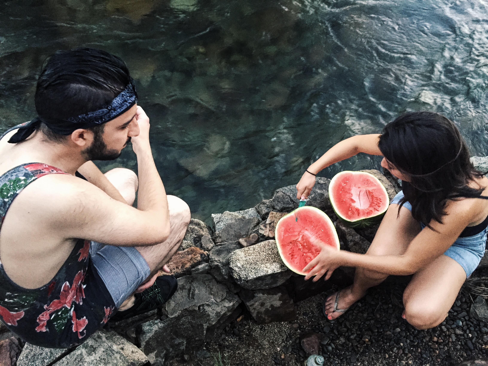
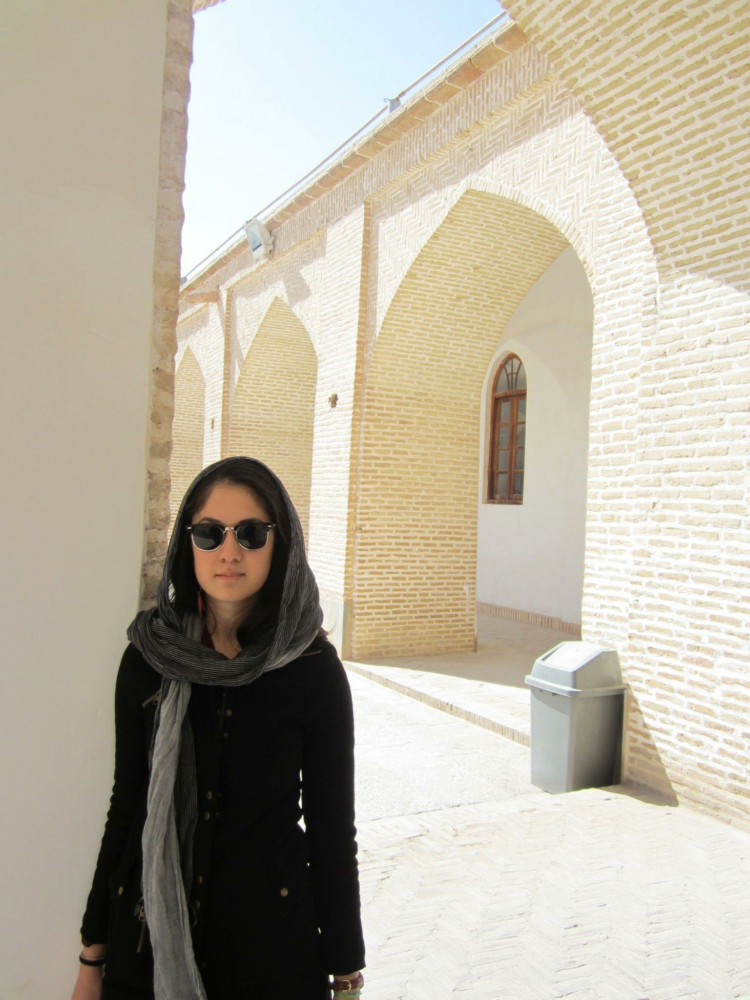
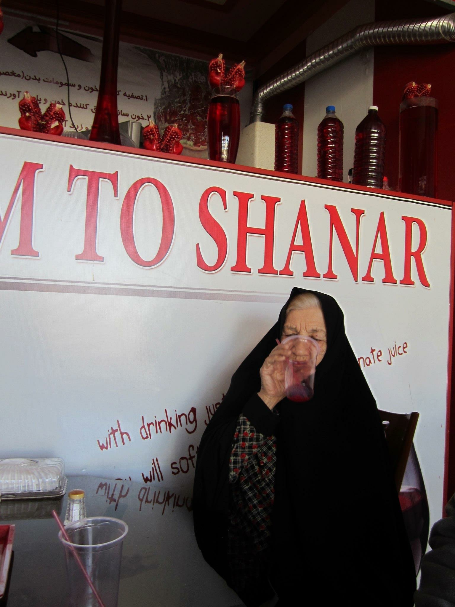
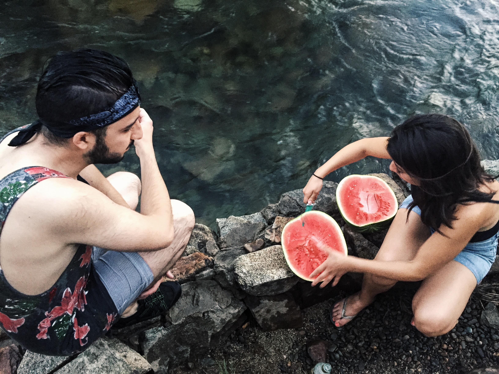
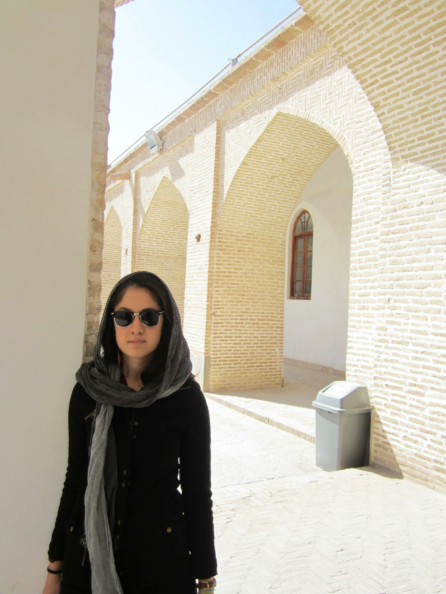
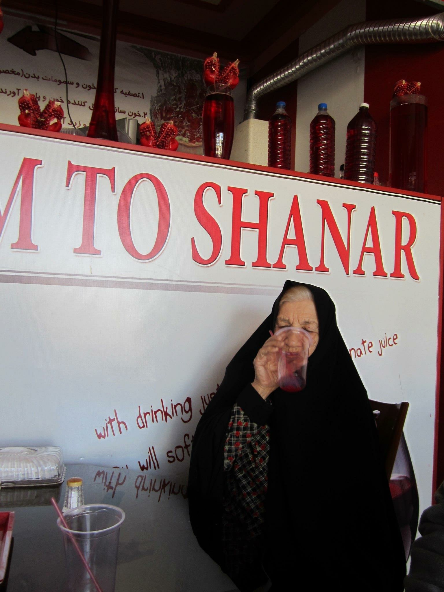
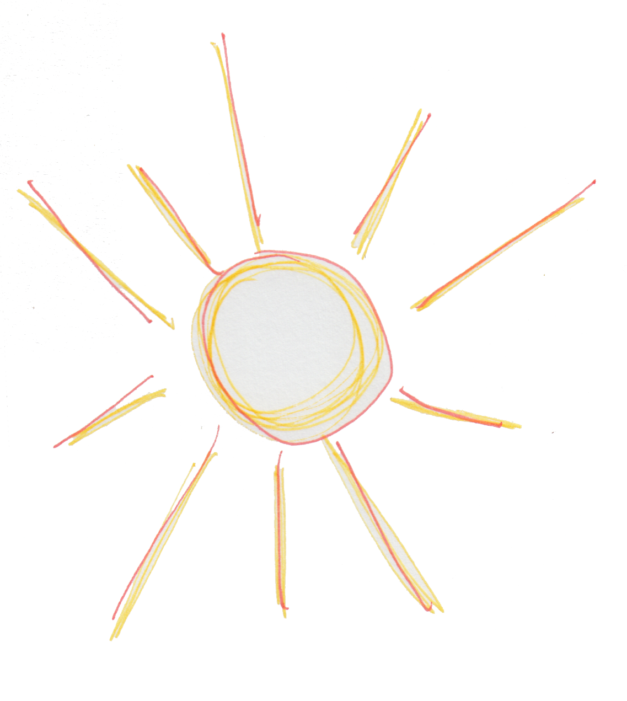
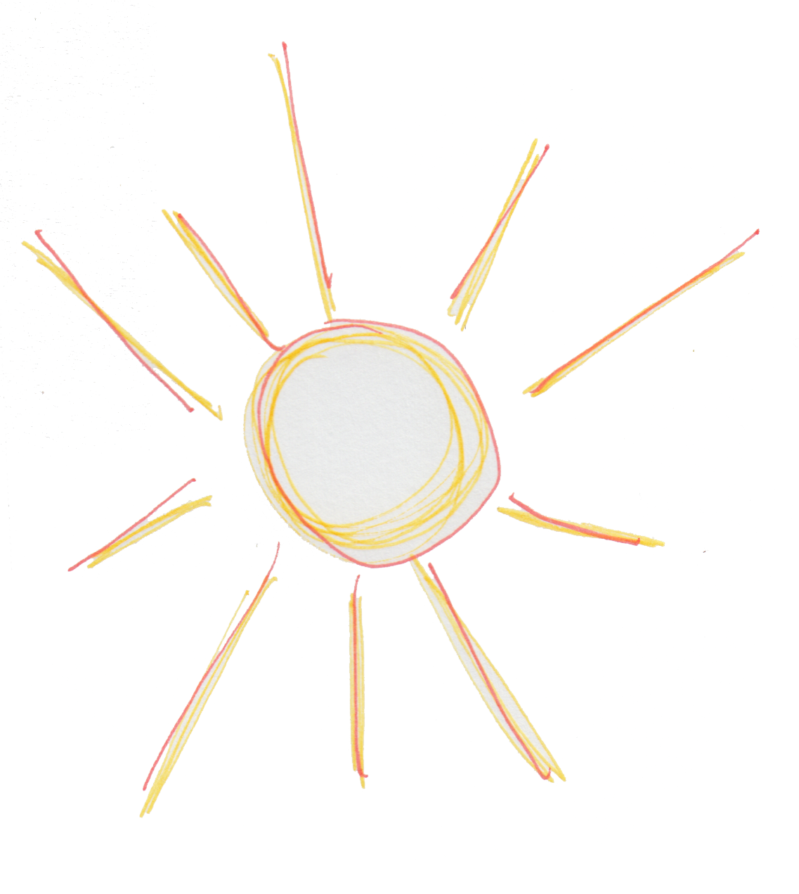

 

The past couple months I’ve been feeling uncharacteristically unreactive, un-committed—to injustice, to tragedy, to anything really.
Sometimes I feel like a college-educated woman more consumed with her split ends than genocide. I have all the paper, none of the words—all of the ink, none of the responses. Atrocities are swiped aside quicker than Tinder matches. But frequency should not suggest normalcy. There is no “re-sensitize me” button.
America cultivated my thinking and Iran nurtured my feeling. The sweet spot between my home and my homeland is sacred—and under attack. Empathy is free, you know—but the consequences of apathy are costly.
I feel like I have finally woken up.
I was born in Tehran, Iran and moved to Vancouver, Canada with my parents at the age of eight. Since then, my family became split throughout the world and so began my nomadic life. I carry a dichotomy of Eastern and Western cultures, perspectives, and ways of life. I am a Third Culture Kid, a Canadian, an Iranian, the child of selfless and hardworking immigrants. My background has rendered me into an adaptable and global citizen.
But now...Now, I feel alone, violated, scared, angry, and ashamed.
I could write in detail about how unfair it is that I am (currently) not able to show my parents the life I live in Boston as they are Canadian-Iranian, have the privilege of their presence at my graduation, or travel out of USA with the assurance of my reentry. What have I done to deserve this? Is being born in Iran a crime? Do you, reader, even know anything about Iran?
But no, I want to talk about shame. I am ashamed at myself for not feeling these sentiments as severely for my peers who have suffered, for the innocent people of the world pained daily, for all those who have been wronged for the bigoted favor and idiocy of others. Why did I not stand up and scream for them, as much as I did the past two days for myself and others in my situation? I should have been just as frantic.
I want to reiterate the concept of empathy, of understanding and compassion. It is necessary, now more than ever, to go out of our comfort zones and try our hardest to feel the terrors that others are facing.
I am awake now, and I can’t sleep.


{kind=link}
{kind=link}
{kind=link}
{kind=link}
{kind=link}
{kind=link}
{kind=link}
{kind=link}
{kind=link}